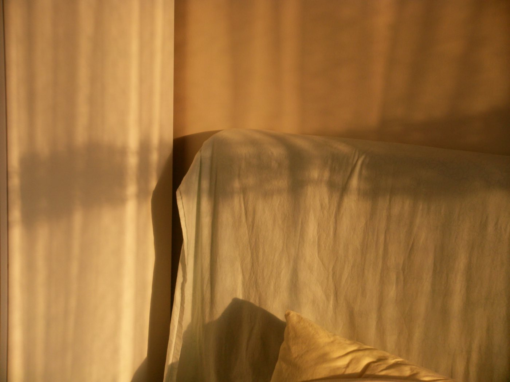
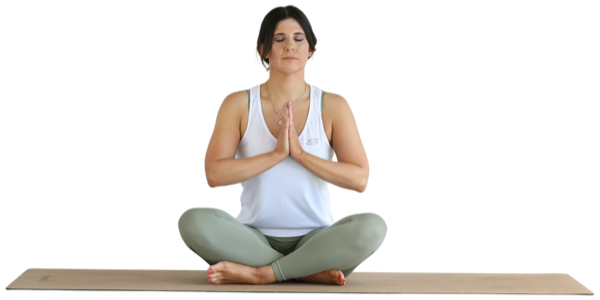

Dormir no es tiempo perdido. Mientras dormimos, el cuerpo repara los músculos, el cerebro ordena lo aprendido y se regulan las hormonas del hambre y del estrés. Los adultos necesitan entre siete y nueve horas de sueño; los adolescentes, un poco más.
El descanso no interrumpe el camino: también es parte de él.

El estrés sostenido cansa tanto como el ejercicio más intenso. Incluye pequeños momentos de calma: salir a tomar aire, escribir lo que sientes, hablar con alguien de confianza. Prueba la respiración 4-4-6:
Repite cinco veces. Exhalar más largo de lo que inhalas ayuda a que el cuerpo se relaje.
Descansar no es rendirse. Es prepararse para seguir.
Los cambios grandes asustan; los pequeños se quedan. Elige un solo hábito y hazlo tan fácil que sea casi imposible fallar: caminar 10 minutos después del almuerzo, dejar una botella de agua siempre a la vista o agregar una porción de verduras a lo que ya comes.
Caminar 20 minutos
Rutina de 10 minutos
Una receta nueva
Rutina de 10 minutos
Bailar o jugar
Paseo al aire libre
Descanso y estirar
Si fallas un día, no falles dos.
Llévate el libro completo: 16 páginas en PDF interactivo, con índice navegable.
DESCARGAR EL LIBRO (PDF)